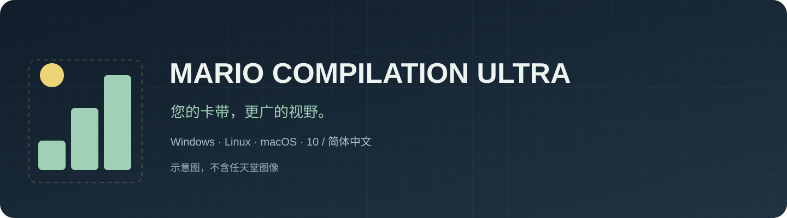
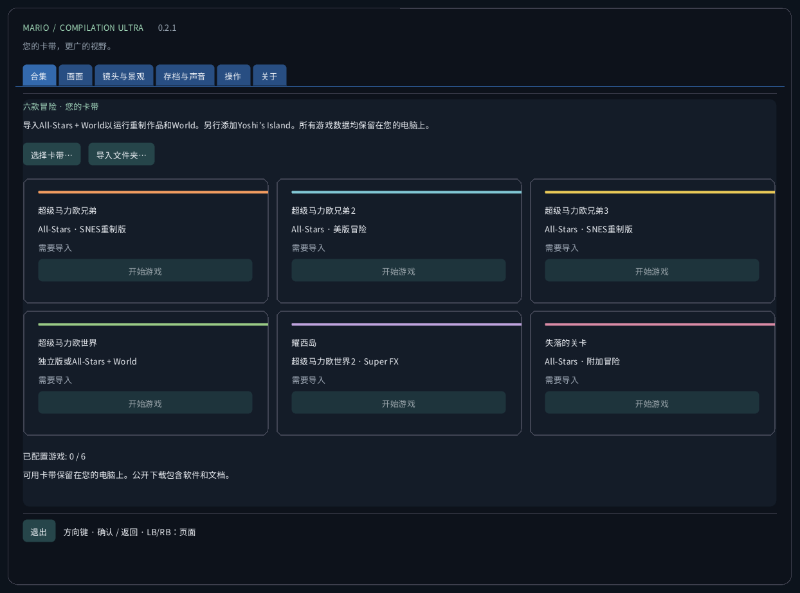
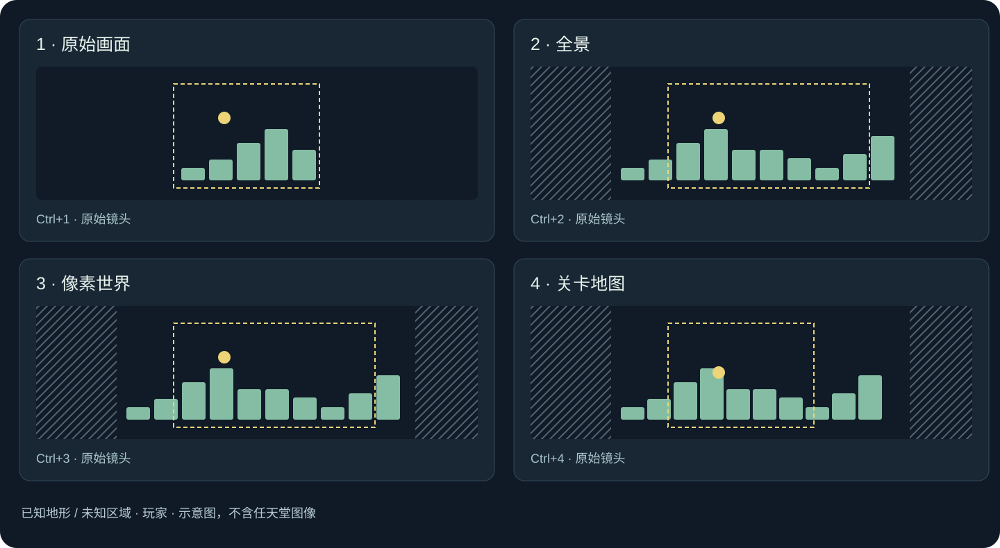
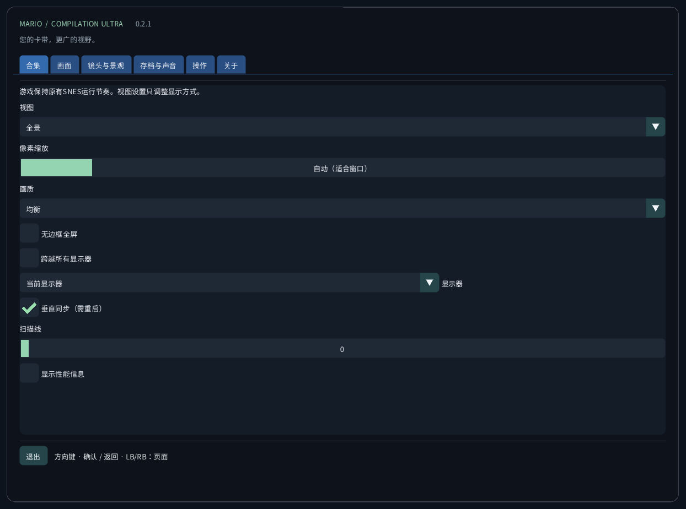
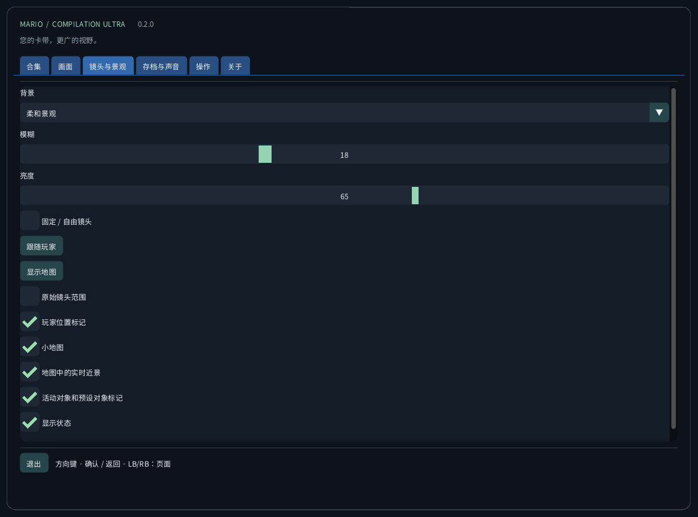
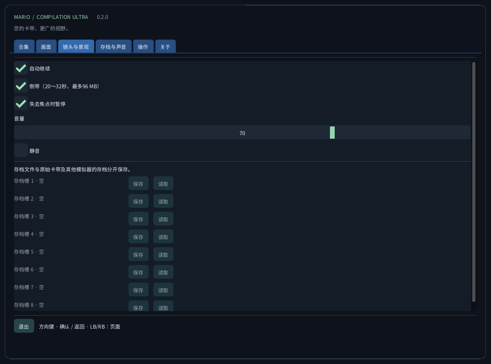
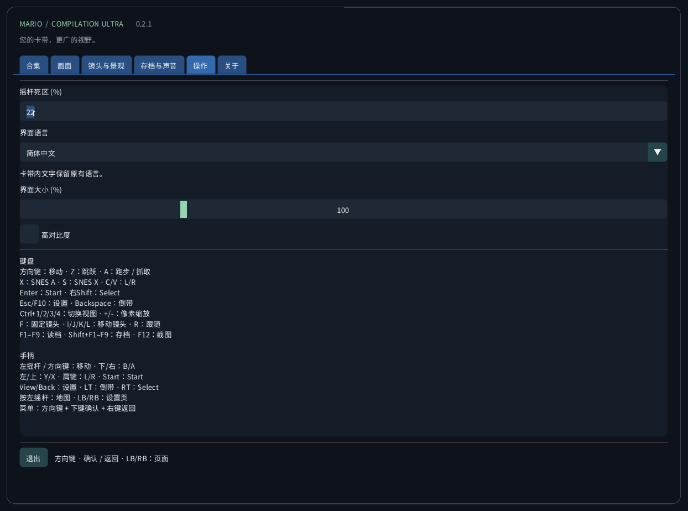
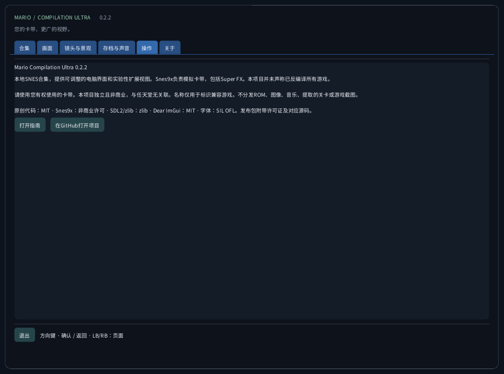

Mario Compilation Ultra 0.2.0
本地SNES合集，提供可调整的电脑界面和实验性扩展视图。Snes9x负责模拟卡带，包括Super FX。本项目并未声称已反编译所有游戏。
下载与桌面启动下载与桌面启动
- 下载适合电脑的平台包并完整解压ZIP。请将程序、SDL、资源和指南保存在一起。Windows打开MarioCompilationUltra.exe；Linux运行Play.sh；Mac打开应用。
- 通过选择卡带、导入文件夹或拖放，导入自己的.sfc、.smc或只含一张卡带的ZIP。文件选择器从应用的数据文件夹打开。将兼容卡带直接放入此文件夹后，下次启动会自动识别。
- All-Stars + Super Mario World包含马里奥1、美版马里奥2、马里奥3、World和The Lost Levels。Yoshi’s Island需单独添加。选择开始游戏，再在原版标题画面按Enter或Start；若正在播放演示，请再按一次。
Windows运行Install-Windows.ps1，将完整软件包复制到用户Programs文件夹并创建桌面快捷方式。Linux运行Install-Linux.sh，将此便携文件夹注册到应用菜单和桌面。Mac将应用移至Applications并创建桌面替身。请保留所选文件夹的位置。
Windows: powershell -NoProfile -ExecutionPolicy Bypass -File .\Install-Windows.ps1 Linux: sh ./Install-Linux.sh

软件包与验证
- Windows x64：已检查本机桌面启动与卡带运行，并执行自动测试。
- Linux x64：自动构建与不含ROM的检查。尚未在实体Linux桌面电脑上测试游戏。
- macOS Intel x64与Apple Silicon arm64：实验版，未在实体Mac上测试。自动环境仅检查构建与不含ROM的界面。采用临时签名，未公证；实体设备上的手柄、声音、图形和Gatekeeper尚未验证。
视图模式

World地图册显示当前加载的区域，并非一次显示游戏所有区域。马里奥1、Lost Levels、马里奥2、马里奥3和Yoshi普通场景在移动时积累已观察地形。未知区域以斜线表示。原镜头外的效果与精灵可能不同。特殊投影使用原始画面。
扩展内存配置与All-Stars自动选择针对所列美版。已识别但没有已验证配置的版本使用原始画面。界面翻译不会翻译商业卡带的剧情或图像。项目并不声称实现了全部五款游戏的新原生反编译版本。
| CRC32 | SNES |
|---|---|
f84305b1 | All-Stars + World (US) |
925637c7 | All-Stars (US) |
b19ed489 | Super Mario World (US) |
d138f224 | Yoshi’s Island 1.0 (US) |
cf98ddaa | Yoshi’s Island 1.1 (US) |
操作
键盘 方向键：移动 · Z：跳跃 · A：跑步 / 抓取 X：SNES A · S：SNES X · C/V：L/R Enter：Start · 右Shift：Select Esc/F10：设置 · Backspace：倒带 Ctrl+1/2/3/4：切换视图 · +/-：像素缩放 F：固定镜头 · I/J/K/L：移动镜头 · R：跟随 F1–F9：读档 · Shift+F1–F9：存档 · F12：截图 手柄 左摇杆 / 方向键：移动 · 下/右：B/A 左/上：Y/X · 肩键：L/R · Start：Start View/Back：设置 · LT：倒带 · RT：Select 按左摇杆：地图 · LB/RB：设置页 菜单：方向键 + 下键确认 + 右键返回
存档与声音
每款游戏提供九个手动存档槽、自动继续、电池SRAM和有限回退。回退最多使用96 MiB，约20–32秒。F1–F9读取，Shift+F1–F9保存。存档检查卡带CRC、核心版本与完整性，并与其他模拟器存档分开。
本地文件
此文件夹包含settings.ini、卡带本地引用、states/、saves/和screenshots/。导入不会上传卡带或修改原文件。更换电脑前请备份此文件夹。即时存档依赖完全相同的卡带与核心；SRAM是独立文件。
Windows: %APPDATA%/ValentinWittwe/MarioCompilationUltra/ Linux: ~/.local/share/ValentinWittwe/MarioCompilationUltra/ macOS: ~/Library/Application Support/ValentinWittwe/MarioCompilationUltra/
若游戏仍提示需要导入
若文件已移动或磁盘断开，请重新选择卡带。ZIP必须只含一个.sfc或.smc，且采用未加密的存储或DEFLATE压缩。请核对支持的版本与卡带头。若缺少字体或SDL，请重新完整解压软件包。
真实界面图集
截图来自未加载卡带的真实应用。示意图使用原创说明图形，并非游戏美术。公开下载不含Nintendo ROM、精灵、音乐、提取关卡或游戏截图。





软件包与验证 · 0.2.0
自动检查涵盖63项运行与手柄断言、十种语言各165条消息、字体覆盖以及四种尺寸共240张真实界面截图。短暂的私人卡带测试不等于通关全部游戏。详细报告与每版工作流区分已验证行为和未测试硬件。
CTest / CI · Report · Build